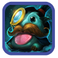
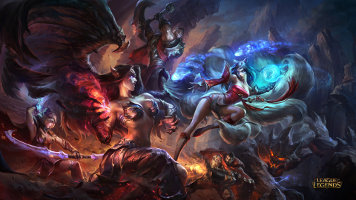

<link rel="import" href="../../../bower_components/polymer/polymer.html">

<polymer-element name="home-page" attributes="">
  <template>
    <link rel="stylesheet" href="home-page.css" />

    <core-toolbar>
      <div class="logo"> 
        
      </div>
      <span flex>LoL Mostacho</span>
    </core-toolbar>

    <div class="item" on-tap="{{goToGameSearch}}">
      <paper-shadow z="1" fit></paper-shadow>
      <paper-ripple fit></paper-ripple>
      <div class="image">
        
      </div>
      <div class="info">
        <div class="header">{{i18n.strings.searchGame}}</div>
        <div class="text">{{i18n.strings.searchGameHelpText}}</div>
      </div>
    </div>

    <div class="item" on-tap="{{goToSummonerSearch}}">
      <paper-shadow z="1" fit></paper-shadow>
      <paper-ripple fit></paper-ripple>
      <div class="image">
        
      </div>
      <div class="info">
        <div class="header">{{i18n.strings.searchSummoner}}</div>
        <div class="text">{{i18n.strings.searchSummonerHelpText}}</div>
      </div>
    </div>

    <div class="item" on-tap="{{goToChampions}}">
      <paper-shadow z="1" fit></paper-shadow>
      <paper-ripple fit></paper-ripple>
      <div class="image">
        
      </div>
      <div class="info">
        <div class="header">{{i18n.strings.counterpicks}}</div>
        <div class="text">{{i18n.strings.counterpicksHelpText}}</div>
      </div>
    </div>

    <paper-fab icon="mdi:menu" on-tap="{{toggleSidebar}}"></paper-fab>
  </template>
  <script>
    (function () {
      Polymer({
        ready: function () {
          this.i18n = window.mostachoI18n;
          this.routeService = window.mostachoRouteService;
        },

        goToSummonerSearch: function () {
          return this.routeService.go('/summoners/search');
        },

        goToChampions: function () {
          return this.routeService.go('/counters/champions');
        },

        goToGameSearch: function () {
          return this.routeService.go('/games/search');
        },

        toggleSidebar: function () {
          document.getElementById('leftSidebar').toggle();
        }
      });
    })();
  </script>
</polymer-element>
